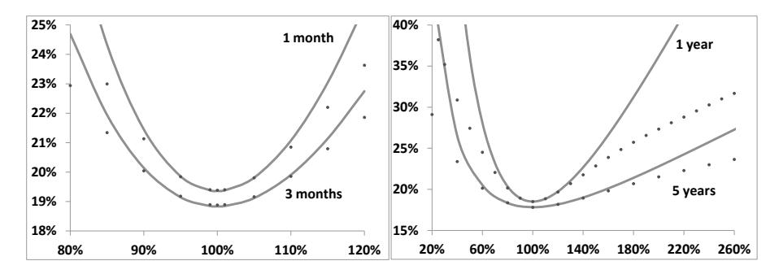
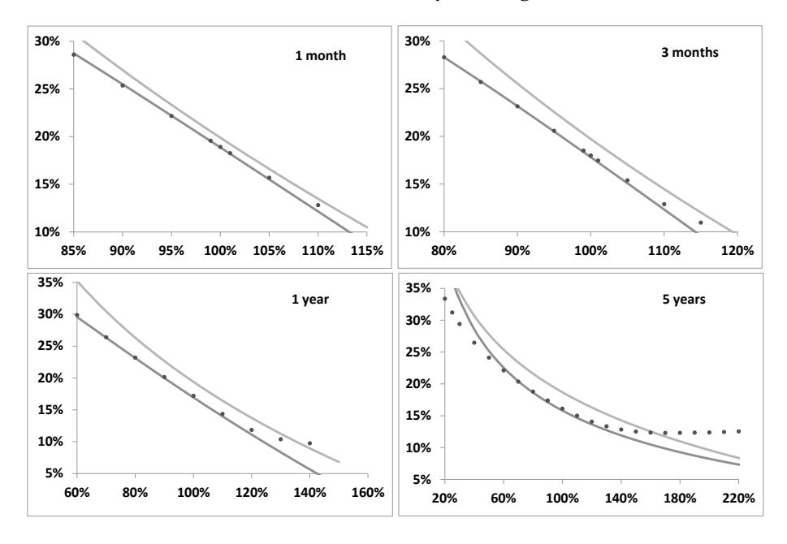
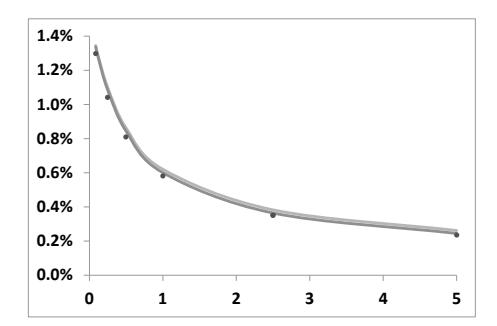
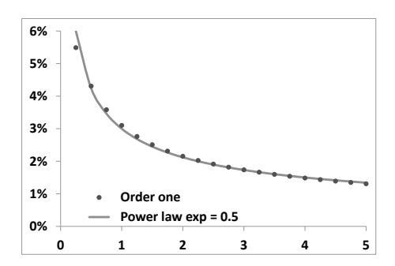
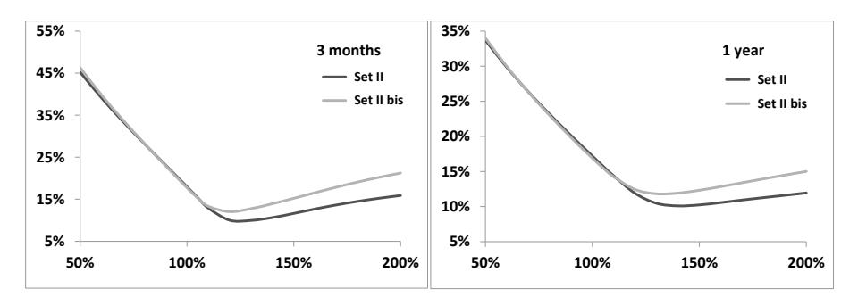
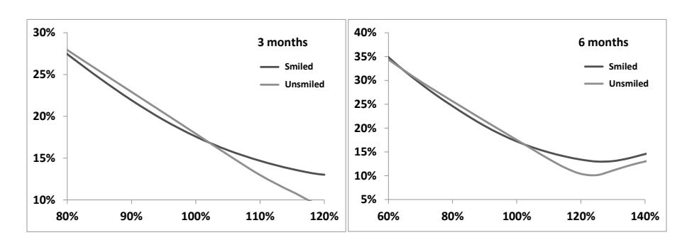

第八章：随机波动率模型的微笑
本笔记基于 Bergomi《Stochastic Volatility Modeling》第八章，按原书行文结构整理，兼顾数学推导的完整逻辑与交易实务视角。
目录
- 引言与问题设定（§8.1）
- 价格在 vol of vol 中的展开（§8.2）
- 隐含波动率的展开（§8.3）
- 欧式期权价格的 Gamma P&L 表示（§8.4）
- 短到期日极限（§8.5）
- 单因子均值回复模型：以 Heston 模型为例
- 双因子模型（§8.7）
- 结论与近似精度（§8.8）
- 远期起始期权与未来微笑（§8.9）
- VIX 微笑对香草微笑的影响（§8.10）
- 附录：Monte Carlo 算法（§8.10 附录 A）
- 端到端工作流算例
导言：本章在全书中的位置
第七章建立了前向方差模型的完整框架：以前向 VS 方差 为状态变量，推导出定价方程（式 7.4），并指出协方差函数 （现货/方差）和 （方差/方差）是决定模型动态的核心输入。参数 控制偏斜， 控制 vol of vol，两者相对独立——但具体是如何通过这两类协方差函数映射到香草期权微笑形态的，第七章并未给出精确的分析结论。
本章回答这个问题：在随机波动率模型（以前向方差框架统一表述）中，香草期权微笑的形态——ATMF 波动率、ATMF 偏斜、ATMF 曲率——究竟由 和 的哪些泛函决定？
回答路径是在 vol of vol 方向做微扰展开，精确到二阶。展开结果有三个关键特征：
- 精简：在二阶精度内，整张近平值微笑仅由三个无量纲数 、、 完全描述；
- 实用：一阶近似下的 ATMF 偏斜公式（式 8.22/8.24）在实践中精度极高，可直接用于模型校准；
- 统一：局部波动率、Heston、前向方差模型的偏斜公式都是同一框架的特例。
本章还给出了微扰展开的替代推导路径（§8.4 的现货/波动率 Gamma P&L 表示），以及两个具体应用：短到期日极限（§8.5）和双因子模型的 ATMF 偏斜期限结构（§8.7）。
读完本章笔记，你将掌握以下能力：
- 用 vol of vol 微扰技巧推导价格展开，理解 、、 的物理含义（§8.2）
- 将价格展开转化为隐含波动率展开，直接读取 ATMF 偏斜近似公式（§8.3）
- 理解以 VS 为对冲工具时，期权价格如何分解为 Gamma P&L 期望（§8.4）
- 分析短到期日极限，理解 SSR=2 的深层含义（§8.5）
- 在双因子模型中计算 ATMF 偏斜期限结构，选取 参数（§8.7）
- 理解 VIX 微笑对香草微笑的影响机制（§8.10）
1. 引言与问题设定（§8.1）
研究动机
第七章已证明，任何随机波动率模型（包括以瞬时方差 为状态变量的第一代模型）都可以改写为前向方差模型。对应的欧式期权定价方程是：
模型的动态完全由 和 这两个协方差函数刻画：
自然的问题：这两个协方差函数的哪些"汇总统计量"决定了香草微笑的形态？
直接数值求解函数偏微分方程既困难又缺乏解析洞察。本章通过将 和 分别按 和 缩放，将问题转化为关于 （vol of vol 的整体幅度）的微扰展开。设定 后，展开结果就是原始模型的近似。
缩放约定为：
之所以 缩放为 而非 ，是因为 是两个波动率增量之间的协方差，而每个波动率增量本身是 量级的——这个缩放约定保证了展开在"方差/方差协方差"和"现货/方差协方差的平方"之间保持一致的量级对比。
技术注释：为什么这个缩放是自然的
具体地，如果 （vol of vol 幅度为 ），则 ，（现货与方差的相关性本身是 的，但方差的变动幅度是 的）。因此对 按 缩放、对 按 缩放，完全对应"在模型中统一将波动率的波动率缩小 倍"这一操作。
展开到二阶后令 ，就得到原始模型的近似——这个近似在 vol of vol 小时很好，但即使 vol of vol 相当大（如 Euro Stoxx 50 的参数集），对近平值期权的精度也令人满意（见图 8.2）。
2. 价格在 vol of vol 中的展开（§8.2）
研究动机
§8.1 确立了 缩放框架，并将定价 PDE 写成了 的结构（式 8.2–8.3）。现在需要将期权价格展开为 的幂次。直接求解各阶 PDE 可行，但本节采用时间依赖微扰论（time-dependent perturbation theory）——与量子力学中的方法完全同构——绕开了逐阶 PDE 求解，直接给出泛函积分表达式，便于利用 BS 传播子 的性质快速计算。
2.1 算符展开框架
将 PDE 的解写成时序指数形式：
其中 表示时序乘积，类似于量子力学中的时序演化算符。自由传播子（Black-Scholes 传播子）为：
这正是以 为总方差的 BS 算符—— 作用在支付函数 上，给出 BS 公式。
利用式（8.11）有两个关键对易关系：
- 与 对易：等价于 BS 模型中 Delta 和 dollar Gamma 是鞅；
- 与 的对易关系（式 8.12）：，即对 落在区间 内的前向方差求泛函导数，等价于作用了一个半阶 Gamma 算符——这正是 BS 中 vega 与 gamma 成比例的算符版本。
2.2 各阶价格的显式表达
微扰展开 各项分别为（式 8.8–8.10）：
只含一次 （现货/方差交叉项）； 含一次 （方差/方差项）和两次 的嵌套积分。
2.3 三个无量纲量的导出
利用对易关系（8.12）和半群性质（8.6），对 进行计算：
其中现货/方差双重积分协方差 定义为：
第二个等号把 的定义代回，并交换积分顺序： 是权重，反映"距到期日越远的协方差贡献越小"。经济直觉： 是 与未来 VS 方差 之间时间加权瞬时协方差的积分，权重 在 时最大（整段时间都对 有影响），在 时归零。
类似地， 的计算给出（由式 8.10 整理）：
其中方差/方差双重积分协方差 和三重协方差量 ：
是 VS 方差自身的"二阶矩贡献"，权重为 ； 涉及" 与 ATMF 偏斜之间的协方差"，反映了 对方差曲线的依赖性（），是唯一携带 vol of vol 微笑信息的量（见 §8.10）。
2.4 最终价格展开
汇总 ，在 、 时的价格展开为：
推导细节： 的计算
将 代入式（8.9），利用对易关系（8.12）： 因此 。 然后利用 与 对易，将 提到 左侧：
2.5 展开的关键性质讨论
性质一：VS 波动率固定。缩放 , 后，前向方差期望值 在每阶均保持不变——VS 隐含波动率随 变化保持不动。这是该展开优于"改变相关系数"等扩展方法的关键：后者在改变 vol of vol 的同时会改变 VS 波动率水平，导致展开精度被系统性地破坏。
性质二：与累积量展开的对应。式（8.18）的修正项形如 （式 8.19），与第五章 §5.5 的对数回报分布的高阶累积量展开完全一致——一阶修正对应三阶累积量（偏度），二阶修正对应四至六阶累积量（峰度）。
性质三：三个无量纲数总结了模型。在二阶精度内，任意随机波动率模型对香草期权的影响被压缩为三个数 、、。其中 和 只需要在初始方差曲线上评估 和 ； 则额外需要 对 的泛函导数——携带 vol of vol 微笑的信息（§8.10 中展示）。
3. 隐含波动率的展开（§8.3）
研究动机
§8.2 给出了期权价格的 展开，但交易员和模型校准都使用隐含波动率。本节将价格展开（8.18）转化为隐含波动率曲面的展开。结论是：在二阶精度内，隐含波动率关于 log-moneyness 精确是二次多项式——近平值微笑由三个参数（ATMF 波动率、偏斜、曲率）完全描述。
3.1 隐含波动率的二次展开
在 精度内，隐含波动率关于 的展开精确为（无高阶项）：
三个系数的完整表达式（令 ）：
二次展开的不寻常性：通常展开会产生 等高阶项，但此处二阶 精度对应的是恰好截止到 项——更高阶的 log-moneyness 项在 精度内精确为零。这一抵消来自波动率展开和价格展开之间的代数结构，是本章的一个非平凡结论（参见 [13]）。
3.2 一阶 ATMF 偏斜公式
在一阶精度（忽略 项）时，ATMF 偏斜大幅简化：
将 的定义（8.13）代入，并将 VS 方差改写为 VS 波动率的形式：
经济直觉：ATMF 偏斜等于 与 VS 波动率的时间加权瞬时协方差的归一化平均——权重 在近期（）最大，在到期时消失。这说明偏斜的主要贡献来自近期的现货/波动率协动，远期的协动只有较小的权重。
当 VS 波动率期限结构平坦（）时，用 ATMF 波动率替换 VS 波动率（一阶等价），得到：
与局部波动率的对应：这个公式与第二章式（2.89）完全相同——那里是在局部波动率模型下推导的偏斜与瞬时协方差的关系。本章说明，这个关系对所有扩散随机波动率模型均成立（在一阶精度内），是模型无关的普遍结论。
两个推导路径的差异值得细看。第二章的式（2.89）来自弱局部性近似（对局部波动率函数做线性展开，式 2.44），通过公式（2.42）的加权平均得到 ATMF 偏斜等于局部波动率斜率 的时间加权积分，权重为 ；本章的式（8.24）则是对协方差函数 做双重积分，权重为 。两者权重互补（ 和 相加为 1），反映的是同一个物理事实的两种视角：
- 局部波动率视角（式 2.48）：给定行权价 ，扫描初始现货 ，计算偏斜——路径终点固定在 ，起点向 移动，近端局部偏斜（，权重 ）贡献大；
- 随机波动率视角（式 8.24）：现货和波动率联动产生偏斜——近端（）的协方差贡献大（权重 ），远端趋于零。
两个公式形式相同，但局部波动率中的 来自模型内部的确定性函数，随机波动率模型中的同一量则是真实的随机协方差——这正是为什么局部波动率和随机波动率模型可以精确匹配同一张香草微笑，却对奇异期权给出不同价格。
此外，第二章"偏斜折半"规则（ATMF 隐含偏斜 = 局部波动率偏斜的 1/2，式 2.50）是本章框架的一个特例：当局部波动率偏斜 与时间无关时，式（2.48）的权重积分 ；用本章语言，局部波动率模型中 退化为 处的 delta 函数，双重积分后给出同样的 1/2 因子。两章的偏斜近似公式在数学上是同一个对象，只是参数化不同。
一阶近似下 ATMF 与 VS 波动率的关系：
这正是第三章式（3.30）在一阶 vol of vol 近似下的体现：ATMF 波动率高于 VS 波动率，差值正比于偏斜（负偏斜意味着 ATMF 高于 VS）。
3.3 近平值近似的适用范围
式（8.20）对近平值期权非常精确，但对远行权价有结构性误差：二次型关于 无界增长，而理论上隐含波动率的渐近行为是 log-moneyness 的仿射函数（Lee 的矩公式，§4.3.1）。因此式（8.20）在远行权价处必然产生套利，但在实践的交易范围内（）精度足够。
4. 欧式期权价格的 Gamma P&L 表示（§8.4）
研究动机
§8.2 用算符展开推导了一阶价格修正，结论是 。但这条路径对物理图像不够透明—— 究竟对应什么可交易量？本节给出一阶修正的替代推导，建立在"用 VS 同时对冲 Gamma 和 Vega"的交易直觉上，直接产生式（8.24）。
核心思路：定义以当前 VS 波动率 为参数的 BS 价格 ，动态追踪它的演化。由于 BS 模型中 vega 等于（按时间调整的）dollar gamma，用 VS 对冲 vega 的同时也自动对冲了 gamma—— 的漂移项精确地被抵消，只剩下现货/波动率交叉 gamma 和波动率/波动率 gamma 贡献。
4.1 以 VS 为对冲工具的表示
定义过程 ，其中 是剩余期限的 VS 方差。
利用 BS 方程（ 满足的 PDE，式 8.27）和 BS 中 vega-gamma 关系 （式 8.28），计算 后取期望：
现货 Gamma 项精确抵消——因为 VS 合约同时充当了 Gamma 对冲工具（这正是 BS 中 vega=Gamma 的算符版本）。在 上积分，得到：
经济解读：期权价格 = BS 基准价格（用初始 VS 波动率定价）+ 现货/波动率交叉 Gamma P&L 期望 + 波动率/波动率 Gamma P&L 期望。这是对任意扩散模型精确成立的等式，不是近似。
它与第二章式（2.30）结构相同，差别在于：这里的基准是"BS 以 VS 波动率定价"，而第二章的基准是"BS 以局部波动率定价"。用 VS 作为基准的优势：由于 vega=Gamma，VS 对冲同时消除了 gamma P&L，公式中不再出现现货 Gamma 项。
为什么不能用 ATMF 隐含波动率代替 VS 波动率作为基准？
关键在于 VS 方差的无漂移性：（前向方差是鞅），使得 的漂移项在 中精确抵消。ATMF 隐含波动率在一般随机波动率模型中有漂移，使用它作为基准会留下非零漂移项，公式不再是干净的 Gamma P&L 形式。
4.2 一阶展开的推导（§8.4.1）
在一阶精度下， 是二阶小量，式（8.29）简化为：
利用 vega-gamma 关系和"协方差不依赖于 "的假设（在局部波动率和前向方差模型的线性化下成立），最终得：
与式（8.18）的一阶项完全吻合，并直接给出 ATMF 偏斜公式（8.24）。
4.3 支付：实现化现货/波动率协方差（§8.4.2）
在一阶近似下，哪个欧式期权的价格能直接体现隐含的现货/波动率协方差？
答案是支付 。对该支付做 delta + vega（VS）对冲，累积的交叉 Gamma P&L 为：
这恰好是式（8.30）括号内的时间加权协方差（乘以折现因子）。因此， 的市场价格与其 BS 价格之差（用初始 VS 波动率计算），在一阶近似下直接度量了隐含的现货/波动率协方差——是一个可从期权市场读出的可交易量。
的复制密度为 ，在低行权价处为正（买入认沽），高行权价处为负（卖出认购），实质上是对整体微笑斜率的测量。
5. 短到期日极限（§8.5）
研究动机
式（8.21）在一般期限下包含 、、 三个输入。当 时，方差曲线塌缩为单点——模型动态由瞬时值 、 决定。此极限给出短期偏斜和曲率关于可观测量的表达式，且这些表达式在扩散模型中对所有阶数精确成立，对研究短期期权有独立价值。
5.1 短期的量级与精确结果
当 时，，，。在最低阶：
代入式（8.21），取 主导阶（令 ）：
关键洞察一：短 ATMF 偏斜 是现货与瞬时 ATM 波动率瞬时协方差的直接度量，可从市场微笑模型无关地读出。结合 SSR 定义，式（8.36）等价于 ——这对所有扩散模型普遍成立。
这个结论与第二章 §2.5.3 的 规则是同一件事的两种表述。第二章通过前向-后向对称性论证（式 2.78–2.79）证明了对时间无关局部波动率模型 对所有期限精确成立，并对短期限给出了精确证明（来自式 2.54 的调和平均公式）。本章则说明 是所有扩散模型（不限于局部波动率）在 时的普遍结果——随机波动率模型在短期也满足这个关系，它是扩散假设本身的必然推论，与波动率动态的具体形式无关。
关键洞察二：短曲率 不是 vol of vol 的直接度量，还包含 （现货与短偏斜的协方差）。提取 vol of vol 需要建模假设——这是本章的重要约束结论：偏斜可以模型无关地测量，vol of vol 不能。
5.2 对数正态 ATM 波动率——SABR 极限（§8.5.1）
设短 ATM 波动率对数正态（SABR 短期极限），vol of vol 为 ，与 的相关系数为 ：
特征：短偏斜与 ATM 波动率水平无关（对数正态结构）；曲率与 成反比。Vol of vol 的反解：
5.3 正态 ATM 波动率——Heston 极限（§8.5.2）
设短 ATM 波动率正态（Heston 短期极限），正态 vol of vol 为 ：
特征：短偏斜与 成反比——这是 Heston 模型的结构性约束，意味着低波动率环境下前向偏斜更陡，这与直觉不符，也是 Heston 定价 cliquet 时产生 Vega 的根本原因（§8.5.2 末尾）。
比较两个模型：在同等 vol of vol 水平下（），偏斜相同，但曲率不同。差异正是 在两模型中不同所致——精确验证了"提取 vol of vol 需要建模假设"的结论。
对中国市场的参照：沪深 300 ETF 期权近月偏斜通常约 至 （以 表示），对应 per 1% moneyness。式（8.36）给出 ，取 可估算瞬时协方差量级约 （年化）。尚无公开 A 股市场短期 vol of vol 数据；可根据历史 ATM 波动率时间序列自行估计 后代入式（8.40）或（8.43）验证模型设定的合理性。
5.4 零相关的特殊情形（§8.5.3）
当 时，，曲率退化为：
此时短曲率是 vol of vol 的直接度量，对所有扩散模型精确成立（到 ），是本章唯一的模型无关 vol of vol 测量结论。
5.5 跨章节汇总：各模型的 BS 隐含波动率近似指标对比
本章的微扰展开框架统一了局部波动率、Heston、SABR、双因子前向方差四类模型对近平值 BS 隐含波动率的近似计算。下表从三个维度（ATMF 偏斜 、短期偏斜 、短期曲率 ）汇总各模型的近似公式，并标注对应章节。
| 指标 | 局部波动率（第2章） | Heston（第6章，短期） | SABR（对数正态型，短期） | 双因子前向方差（本章） |
|---|---|---|---|---|
| 一般期限 | （式 2.48） | 本章框架下由 决定，同式（8.22） | 同左 | （式 8.55） |
| 短期 （） | （由式 2.48 取 ） | （，式 8.42a） | （与 无关，式 8.39a） | 同 SABR 型（对数正态） |
| 短期 （） | （，式 8.42b） | （，式 8.39b） | 同 SABR 型（对数正态） | |
| 短期 SSR | （精确，式 2.66；前向-后向对称） | （精确，本章 §8.5） | （精确，本章 §8.5） | （精确，本章 §8.5） |
| 一般期限 SSR | ，由偏斜期限结构决定（式 2.64） | ，随 变化 | （偏斜与 无关时 接近常数） | （对数正态结构使偏斜与 解耦） |
| 偏斜与 的依赖 | 完全由微笑锁定，无独立参数 | （强依赖） | 独立于 | 独立于 VS 波动率水平（式 8.55 不含 ） |
横向阅读这张表的三条结论：
第一，短期 SSR=2 是所有扩散模型的共同基础线，无论局部波动率、Heston 还是 SABR。区别在一般期限：局部波动率的 SSR 随期限单调递增（第二章式 2.64），Heston 的 SSR 随波动率水平变化，双因子模型的 SSR 接近 2 且稳定——这正是第七章"前向方差模型的偏斜不依赖于 VS 水平"这一性质在近平值指标上的体现。
第二，Heston 与 SABR/双因子的核心差异在于偏斜与波动率水平的耦合。Heston 的 意味着高波动率时偏斜更弱，低波动率时偏斜更陡——这使得 Heston 在对 cliquet 定价时，波动率水平和偏斜水平被强制耦合（第六章 §6.4），无法独立设定。SABR 和双因子模型的对数正态结构打破了这一耦合，是其相对 Heston 的主要优势之一。
第三，局部波动率的偏斜近似公式（式 2.48）和随机波动率的偏斜近似公式（式 8.24）在数学形式上完全等价，差别只在于权重的积分变量不同（ vs. ，互补关系）。这说明偏斜本身不能区分两类模型——区分它们需要看偏斜随时间的演化（未来偏斜，第二章 §2.6 和第八章 §8.9）以及偏斜对波动率水平的依赖性（上面第二条）。
6.单因子均值回复模型：以Heston模型为例
研究动机
§8.5 给出了短期结论，§8.3 给出了一般期限的隐含波动率展开公式。本节把框架应用到第六章已分析过的第一代随机波动率模型，验证展开结果与已知结论的一致性，并给出 、、 在这类模型中的具体计算。
6.1 通用单因子模型的协方差函数
考虑均值回复单因子模型（式 8.45）：
前向方差为 （式 8.46），其动态为：
由此导出协方差函数（式 8.48）：
两者的指数衰减结构（）正是第七章 §7.2 中"单因子 OU 过程对应的指数型 vol of vol"的直接体现——这印证了第七章关于马尔可夫表示充要条件的结论。
6.2 Heston 的验证
取 （Heston），将上述 代入式（8.13–8.17）计算 、、，再代入式（8.21），可以验证：所得结果与第六章式（6.15）和（6.18b）完全一致。特别地，短 ATMF 偏斜（式 8.49）：
与 Heston 模型的经典结果吻合，且正好对应式（8.42a）（正态模型，，）。
7. 双因子模型（§8.7）
研究动机
§8.6 验证了单因子第一代模型的特例。双因子模型（第七章 §7.4）是本书的核心实用模型，vol of vol 期限结构灵活，偏斜期限结构可以近似拟合幂律。本节回答两个关键问题：(1) 式（8.21）的二阶近似精度是否足够？(2) 如何选取 、 使偏斜期限结构与市场一致？
7.1 双因子模型的协方差函数
双因子模型（式 7.28）的 和 为（式 8.50–8.51）：
、、 通过 和 的多重积分计算，可以高效地用 Gauss 求积处理（ 光滑，极少积分节点即可）。对平坦 VS 期限结构，有解析表达式（参见 [13]）。
7.2 非相关情形：近平值微笑精度验证（§8.7.1）
设 （无偏斜），式（8.21）化为（）：
图 8.1 展示了四个到期日（1 月至 5 年）的精确（MC）与近似（二阶展开）微笑对比，VS 期限结构平坦 20%：

图 8.1：双因子模型（Set II 参数，无相关）在 1 月、3 月、1 年、5 年期的精确（点）与二阶近似（实线）微笑。二阶近似对近平值区间精度极高，远行权价处偏差随期限增大而增大——这是近平值展开的固有局限。
一阶项对 ATMF 波动率和曲率的贡献均为零（），整体由二阶项驱动：ATMF 波动率微弱下移（凸性修正），对称的曲率微笑。
7.3 相关情形：ATMF 偏斜的精度（§8.7.2）
采用 Set II 参数（表 8.1）加 、（表 8.2）。图 8.2 展示精确与一阶/二阶近似微笑：

图 8.2：参数 Set II（表 8.2），平坦 VS 20%。一阶（浅色）与二阶（深色）近似，以及精确 MC（点）。二阶展开相比一阶在 ATMF 波动率水平上显著改进；ATMF 偏斜在一阶精度下已经极为准确。
偏斜的一阶公式（平坦 VS，式 8.55）：
两个因子各贡献一项，权重函数 随 的行为决定了偏斜的期限衰减： 大（短时间尺度）的因子对短期偏斜贡献大， 小（长时间尺度）的因子对长期偏斜贡献大。
对数正态结构的关键性质：式（8.55）中 不含 ——在双因子对数正态模型中，一阶 ATMF 偏斜与 VS 波动率水平无关。这与 Heston（正态型，偏斜与 成反比）形成鲜明对比，如图 8.4 所示。
图 8.3 展示精确与一阶/二阶近似的 ATMF 偏斜期限结构（以 度量）：

图 8.3：精确（点）与一阶（浅线）、二阶（深线）ATMF 偏斜（），期限 1 月至 5 年。一阶公式精度极高，二阶修正仅带来极小改进。
7.4 ATMF 偏斜期限结构的校准（§8.7.2 续）
实际使用中，需要选取 、 使式（8.55）产生与市场一致的偏斜期限结构。典型权益指数偏斜近似为幂律衰减 （图 8.5）：

图 8.5：式（8.55）给出的一阶 ATMF 偏斜（，实线）与幂律基准（指数 ，1 年处 3%，点线），期限 3 月至 5 年。两者吻合良好。
选取 、 有自由度约束：三元相关矩阵 须半正定，即（式 8.56）：
通过调节 （和 ），可以在一定范围内改变偏斜衰减指数（约从 0.4 到 0.6），覆盖市场通常观察到的范围。
的选参依据是历史偏斜期限结构，而非最小化整张微笑的拟合误差。 这正是第七章 §5.1 所说的"香草微笑的完整拟合是次要目标"在本章的具体落地：选取 、 的标准是使式（8.55）的偏斜期限结构与历史上观察到的幂律衰减形状一致，而不是对当日整张隐含波动率曲面做最小二乘拟合。原书 §8.8 明确指出这一点：
"Values of , can be chosen so that the term structure of the ATMF skew is consistent with actual term structures of ATMF skews of equity indexes."
这与参数 、、（通过历史 vol of vol 期限结构设定）的校准逻辑完全一致——结构参数由历史数据决定，当日市场数据只用于更新 （VS 或 ATMF 波动率期限结构）。
偏斜与 vol of vol 之间仍有一个重要的不确定性：式（8.55）中决定 ATMF 偏斜的是乘积 ，而非两个参数各自的取值。因此，若等比例地将 、 乘以常数 同时将 除以 ，ATMF 偏斜保持不变（原书 §8.8）。这两组参数产生相同的 ATMF 偏斜，但 vol of vol 幅度不同，对深虚值波动率和前向微笑有不同影响（图 8.6）。这意味着仅凭当前 ATMF 偏斜期限结构，无法唯一确定 和 的组合——需要额外约束（方差实现期权、VIX 期权、或历史 vol of vol 估计）才能分离两者。这是第七章将结构参数设定与 VS 期限结构输入分成两层的根本原因之一。
8. 结论与近似精度（§8.8）
二阶展开对近平值期权精度极高，可用于：
- 校准近平值隐含波动率（快速、解析）
- 作为 Longstaff-Schwartz 等路径相关定价算法的中间步骤（需要把香草期权价格作为观测量）
精度随期限和 vol of vol 水平而下降。使用 Set II 参数、平坦 VS 20%，5 年 ATMF 波动率：MC 精确值 16.0%，二阶展开 15.6%；若将 加倍（非现实水平），差距扩大至 MC 9.8%、展开 5.1%——展开在大 vol of vol 时失效，但现实参数下可接受。
一阶 vs. 二阶的分工：对 ATMF 偏斜，一阶精度已经足够；对 ATMF 波动率水平（与 VS 波动率的差值），必须用二阶展开。这是一个实务上清晰的分工：若只需要快速估算偏斜期限结构选参，式（8.55）一阶公式即可；若需要精确描述 ATMF 波动率，须用完整二阶公式（8.21）。
偏斜的等价参数化与不对称影响（§8.8 的核心警示）：由式（8.55），ATMF 偏斜由乘积 决定。若将 、 乘以 、 除以 ，ATMF 偏斜不变。局部地看（近平值区间），二阶展开预测这两套参数的微笑差别仅体现在 ATMF 波动率和曲率上——但对整张微笑（包括深虚值行权价）而言并非如此：

图 8.6：Set II 参数与 Set II bis（ 乘以 0.9、 除以 0.9）在 3 月和 1 年期的香草微笑对比。ATMF 偏斜完全相同，但深虚值和深实值波动率的变化是不对称的：典型权益指数情形下，低行权价的隐含波动率几乎不受影响，高行权价的隐含波动率则有明显变化。
这一不对称性的根源： 和 对 ATMF 偏斜（由 决定）的作用是等价的，但它们对微笑曲率（由 和 竞争决定）和 ATMF 波动率（凸性修正）的作用不同——高 低 组合产生更强的 vol of vol 凸性效应，使高行权价波动率上移。对连续前向方差模型，偏斜和 vol of vol 无法在整张微笑上完全解耦；离散模型（§7.8）通过区间独立参数化部分解决了这一问题。
因此，仅凭当前 ATMF 偏斜期限结构不能唯一确定 和 的组合——这正呼应了第七章 §5.1 的结论：结构参数 和 的设定依赖历史 vol of vol 估计和经济判断，而非由香草微笑单独决定。第七章提到"香草微笑的完整拟合是次要目标"，本章在此给出了量化的解释：ATMF 偏斜被拟合，但整张微笑仍有自由度，这个自由度对应的就是 的分配方式。
9. 远期起始期权与未来微笑（§8.9）
研究动机
§8.3–§8.8 分析了现货起算微笑。对远期起始期权（支付 ），第三章 §3.1 将价格分解为：vol of vol 贡献 和前向微笑贡献 。本节从本章的微扰框架视角重新审视这两项，并说明双因子模型在管理前向微笑风险方面的优势。
局部波动率模型的问题：未来偏斜的衰减过快（§2.6），对 的定价系统性偏低。
时间齐次随机波动率模型的特征：未来微笑与现货起算微笑相似，且在双因子模型中，未来 ATMF 偏斜不依赖于 VS 波动率水平（对数正态性质）——在一阶精度下，由式（8.55）直接给出（ 替换为剩余期限 ）。
这意味着双因子模型对 cliquet 等产品的定价天然去耦：前向偏斜风险（）和 vol of vol 风险（）可以相对独立地控制，而不是像 Heston 那样通过 和 强制耦合。
10. VIX 微笑对香草微笑的影响（§8.10）
研究动机
§8.7 中使用的双因子模型是基础（对数正态）版本——vol of vol 没有自己的微笑（前向方差为对数正态）。第七章 §7.7 已展示如何用两指数叠加参数化来校准 VIX 期权的正斜率微笑。本节回答：若将双因子模型校准到 VIX 微笑（引入 vol of vol 的微笑），香草期权微笑会如何变化？
10.1 量的作用
回顾三个无量纲量的分工： 和 仅依赖 在初始方差曲线上的值；而 （式 8.17）依赖 ，即 如何随方差曲线变化。
VIX 期权微笑是正斜率的（方差实现的分布有正偏）。校准到 VIX 微笑后，模型等价于增大了"高波动率环境下的 负性"（因为 ），使 更正。
从式（8.21b）和 的表达式：
- 中 的贡献为正号（ 项），使负偏斜减弱（偏斜绝对值变小）；
- 中 的贡献也正（ 项），使曲率增大。
直觉：VIX 正斜率微笑意味着"高波动率状态下，未来波动率的上行幅度比基础模型更大"——这使得现货跌（）时的波动率上升变得更平均（偏斜稍弱），但现货大幅偏离时的不对称性更强（曲率增大）。
图 8.7 用 Set II 参数和两组 vol of vol 微笑参数（有微笑 vs. 无微笑）验证了这一预测：

图 8.7：3 月和 6 月期双因子模型香草微笑，在带 VIX 微笑（参数式 8.57）和不带 VIX 微笑两种情形下的对比。带微笑版本偏斜略弱（负偏斜绝对值小）、曲率略大，与二阶展开的预测完全一致。
数量级感受：影响是实质性的但不是主导性的——在 VIX 微笑参数 、、 下，3 月偏斜变化约 ，曲率变化约 ，相对于基础微笑（约 偏斜）是几个百分点的修正。
11. 附录：Monte Carlo 算法（§8.10 附录 A）
研究动机
§8.7 的"精确"结果来自 Monte Carlo 模拟。直接对最终支付取平均噪声过大，原书附录 A 给出三种更高效的算法，实践中可按需选用。
A.1 混合解法（Mixing Solution）
利用 的分解（式 8.59），条件于方差因子 的路径， 服从对数正态分布（式 8.60），可以解析积分掉 ：
其中 和 依赖 路径（式 8.61）。只需模拟方差因子，MC 维度从 降为 2，大幅提速。缺点：高相关性时（ 接近 1） 接近零，效果退化（图 8.8 的 Top 部分）。
A.2 Gamma/Theta 累积法
模拟 的同时以 BS 风险管理波动率 计算 Gamma/Theta P&L，用其代替直接支付的评估（式 8.64–8.65）：
这等价于完美 Delta 对冲——对近平值期权噪声极小。可以动态调整 为当前 VS 波动率，进一步减小路径间方差。
A.3 计时器期权式算法（Timer Option）
通过动态调整已实现二次变分预算 ，完全消除 Gamma/Theta P&L——路径贡献只由再定价 P&L 组成（式 8.66）。该算法在计算成本归一化后与 Gamma/Theta 法精度相当（图 8.8），且产生的价格估计在 方向严格正（无反套利问题），但在高相关性时不如混合解法。
图 8.8 对四种算法（直接法、Delta 法、Gamma 法、计时器法、混合法）在 Set II 参数下做了精度和效率对比，推荐优先考虑 Gamma/Theta 法或计时器法作为默认算法。
12. 端到端工作流算例
本章的核心输出是一套解析近似公式（式 8.22/8.24/8.55），可以在给定模型参数后直接计算 ATMF 偏斜、ATMF 波动率修正量和偏斜期限结构，无需 Monte Carlo。本算例的目标是：在一组具体市场参数下，逐步走通从协方差函数 到 、再到 ATMF 偏斜数值的完整计算链，验证各公式的内部一致性，并与原书图 8.5 的结果对照。
产品：1 年期平值认购期权，，（）， 年。模型采用双因子 Set II（表 8.2）：，，，，，，，平坦 VS 波动率 （）。
步骤 1：计算 与协方差函数
做什么：计算归一化因子和 的双因子结构。
本章对应：§8.7（式 8.50）。
平坦 VS（），代入式（8.50）得前系数：
其中 ，。
关键观察：（负相关），短因子（）对短期协方差主导，长因子（）在长期持续贡献。
步骤 2：计算
做什么：二重积分 ，得到决定一阶偏斜的核心量。
本章对应：§8.2（式 8.13）、§8.7（式 8.54）。
| 因子 | 商 | |||
|---|---|---|---|---|
| 短 | 5.35 | 28.62 | ||
| 长 | 0.28 | 0.0784 |
步骤 3：一阶 ATMF 偏斜
做什么：代入式（8.22）计算一阶 ATMF 偏斜。
本章对应：§8.3（式 8.22）、§8.7（式 8.55）。
以 5%/5% 宽度表示：
与原书对比：Set II 参数设计目标 3%（图 8.5），计算结果 3.18%，一致。
交叉验证（式 8.55 直接代入）：
步骤 4：ATMF 波动率的二阶修正
做什么：估算 对 ATMF 波动率的二阶凸性修正。
本章对应：§8.3（式 8.21 中的 表达式）。
利用 1 年期有效 vol of vol 约 （步骤 2 第七章已算）：
二阶 ATMF 波动率修正（ 和 均贡献，主导项）：
即 ATMF 波动率约比 VS 波动率低 （vol pt），与图 8.2 中一阶与二阶近似的差距一致。
关键观察：一阶近似已精确捕捉 ATMF 偏斜；ATMF 波动率水平的精确估计需要二阶项——这是本章"一阶偏斜、二阶 ATMF 波动率"的双重结论。
步骤 5：短期偏斜验证
做什么：在 1 月期验证短期公式式（8.36），与步骤 3 对比衰减行为。
本章对应：§8.5（式 8.36）。
关键观察：短期（1 月）偏斜约为 1 年期偏斜的 倍，近似遵循幂律 （，略高说明长因子支撑了年期偏斜，使衰减比纯幂律稍慢）。
步骤 6：偏斜期限结构
做什么：计算 3 月、1 年、5 年的 ATMF 偏斜，验证幂律衰减。
本章对应：§8.7.2（式 8.55，图 8.5）。
| 3月（0.25） | 5.64% | |||
| 1年（1.00） | 3.18% | |||
| 5年（5.00） | 1.35% |
其中 ，两项括号因子 ，乘以 。
衰减比：，幂律预测（）：——双因子使衰减比纯幂律略缓，与图 8.5 完全一致。
工作流总结表
| 步骤 | 关键计算 | 本算例关键发现 | 表现 |
|---|---|---|---|
| 1. 与 | 前系数 ，两项 | 短长因子贡献比约 61%:39% | ✅ 解析 |
| 2. | ，短因子贡献略大 | 两时间尺度均不可忽略 | ✅ 解析 |
| 3. 一阶偏斜 | （0.95/1.05），与目标 3% 一致 | 一阶公式在双因子对数正态模型中精度极高 | ✅ 一阶精确 |
| 4. 与 ATMF 波动率 | 二阶修正约 vol pt | 须二阶才能准确描述 ATMF 水平 | ⚠️ 估算 |
| 5. 短期极限 | 1 月偏斜约 7.79%，约为年期 2.45 倍 | 近似 衰减，长因子使衰减稍缓 | ✅ 式（8.36）精确 |
| 6. 期限结构 | 3月5.64%→1年3.18%→5年1.35% | 近似幂律，与图 8.5 一致 | ✅ 式（8.55） |
三类模型对比：
| 模型 | ATMF 偏斜公式 | vol of vol 独立性 | 偏斜期限结构灵活性 |
|---|---|---|---|
| 局部波动率 | 与微笑完全锁定 | ❌ | ❌ |
| Heston（单因子） | 可用本章框架，但期限结构固定 | ⚠️ 与偏斜耦合 | ❌ 单时间尺度 |
| 双因子前向方差 | ✅ 式（8.55）解析，高精度 | ✅ 独立于偏斜方向 | ✅ 近似幂律 |
专题：为什么 Bergomi 全书以 ATMF 指标为核心？
读完本章，一个自然的疑问是：原书几乎所有分析都集中在 ATMF 波动率、ATMF 偏斜、ATMF 曲率这三个指标上，深度虚值期权的波动率难道不重要吗？这个问题值得正面回答，因为它触及了整个框架的设计哲学。
原因一：扩散模型的微扰展开只在 ATMF 附近精确
式（8.20）证明了：在 精度内，近平值微笑精确是 log-moneyness 的二次多项式，不存在更高阶的 等项。这个简洁性是扩散假设和二阶展开共同作用的结果，只在 ATMF 附近成立。
向远行权价外推时，式（8.20）的二次型无界增长，与理论上的仿射渐近（Lee 矩公式）矛盾，必然在某处产生套利密度。因此展开本身告诉我们：ATMF 附近是扩散模型微扰计算可靠的区域，DOTM 不是。要精确描述DOTM 波动率，需要完整的数值方法（Monte Carlo 或精确 PDE），而非解析近似。
对应地，ATMF 的三个指标（水平 、斜率 、曲率 ）恰好对应 分布的前三阶修正（均值移位、偏度、峰度），是扩散模型中最自然、最稳健的可观测量。
原因二：ATMF 指标是可交易的
ATMF skew 直接决定以下实际交易量的成本：
- 障碍期权触障平仓：触障时须平仓静态对冲组合，平仓成本正比于触障水平处的局部斜率（第一章 §1.3）
- 风险逆转（risk reversal）： 是场内最常见的偏斜报价形式
- Vanna 对冲成本：carry P&L 中现货/波动率交叉 Gamma 项的盈亏平衡水平 （第二章 §2.7）
相比之下，DOTM 期权在股票指数市场中往往流动性差、买卖价差宽，作为校准输入的信噪比低。
原因三：参数校准的稳定性要求
Bergomi 框架的结构参数（、、）的校准目标是复现历史上观察到的 ATMF skew 期限结构形状，而非最小化对整张微笑的拟合误差。原因在第七章 §5.1 和本章 §8.8 都有说明：
若以整张微笑为校准目标，参数就会被当日的DOTM 报价牵着走，每天大幅跳变。结果是模型的 carry P&L 盈亏平衡水平（由 决定）每天都在改变，账簿的风险假设失去稳定性。以 ATMF 偏斜为校准目标，则结构参数可以保持相对稳定，只有 （期限结构水平）每日随市场更新。
DOTM 的信息在哪里？
DOTM 并非被完全忽略，它的信息通过两条渠道进入模型：
第一条：曲率 。式（8.21）中的 由 和 共同决定，控制着近 OTM 区域（）的微笑弯曲程度。一旦 和 确定， 给出了模型在近 OTM 区间的完整预测。
第二条：参数组合的不唯一性（§8.8 图 8.6）。如前所述，保持 不变可以保持 ATMF 偏斜不变，但DOTM 波动率会不对称地改变——低行权价波动率几乎不受影响，高行权价波动率有明显变化。这说明DOTM 波动率携带了超出 ATMF 三个指标之外的额外信息，本质上对应 和 中 vol of vol 幅度与偏斜方向的相对大小。这部分信息在连续模型中无法被 和 同时独立控制，需要离散模型（§7.8）引入区间独立参数 和 才能解耦。
一句话
ATMF 是扩散模型中微扰展开精确成立、参数稳健校准、实际交易最活跃的区域，因此成为分析的自然中心。DOTM 波动率不是不重要，但在 Bergomi 框架里它是 ATMF 指标和 vol of vol 参数确定之后模型结构自动产生的"输出"，而非首要的校准输入。
附：关键公式索引
| 编号 | 内容 | 核心作用 |
|---|---|---|
| (8.1) | 前向方差模型定价方程（含 ） | 本章出发点 |
| (8.13) | 一阶 ATMF 偏斜的决定量 | |
| (8.14) | vol of vol 对 ATMF 波动率和曲率的贡献 | |
| (8.17) | ：含 的三重协方差 | VIX 微笑对香草微笑的传导通道 |
| (8.18) | 价格展开 | 精确到二阶的价格修正 |
| (8.20) | 隐含波动率二次展开 | 近平值微笑完整参数化 |
| (8.22) | 一阶偏斜 | 最常用的实用公式 |
| (8.24) | 偏斜的物理含义：时间加权协方差 | |
| (8.29) | 欧式期权价格的 VS Gamma P&L 表示 | 精确等式，替代推导 |
| (8.36) | 短期偏斜 | 等价于 ，模型无关 |
| (8.37) | 短期曲率 | 含 ，不是直接 vol of vol 测量 |
| (8.44) | 零相关时 | 唯一模型无关的 vol of vol 直接测量 |
| (8.55) | 双因子一阶偏斜解析公式（平坦 VS） | 期限结构校准的核心工具 |